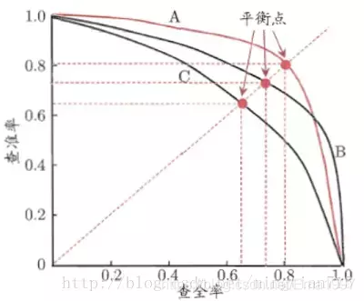

八股文-深度学习(一)
个人网上搜集
八股文-深度学习(一)
解决过拟合的几种方法
- 数据增强
- L1,L2正则化(权重衰减)
- Dropout
- early stopping
- BatchNorm归一化
什么是L1正则化与L2正则化?
L1正则化:在原来的损失函数基础上加上权重参数的绝对值
L2正则化(权重衰减):直接在原来的损失函数基础上加上权重参数的平方和
为什么能够缓解过拟合?
模型复杂度越大，模型越倾向于过拟合。因为神经网络就是一个函数，对其进行傅里叶变换求得频谱，频谱中低频分量就是变化平滑的部分，高频分量就是变化敏感的部分。模型对于微小扰动的反馈差异大实际就是一个过拟合的表现，也就是高频分量不能多。
衡量模型复杂度可以由线性函数x中的权重向量的某个范数来度量其复杂性,例如,因此可以把权重向量的大小加入损失函数中，用于惩罚权重向量的大小。
为什么倾向于使用L2正则化?
事实上，这个选择在整个统计领域中都是有效的和受欢迎的。 使用L2范数的一个原因是它对权重向量的大分量施加了巨大的惩罚。 这使得我们的学习算法偏向于在大量特征上均匀分布权重的模型。 在实践中，这可能使它们对单个变量中的观测误差更为稳定。 相比之下，L1惩罚会导致模型将权重集中在一小部分特征上， 而将其他权重清除为零。
Dropout是什么?
- 遍历神经网络每一层节点，设置节点保留概率keep_prob（每一层的keep_prob可以不同，参数多的层keep_prob可以小一些，少的可以多一些）。
- 删除神经网络节点和从该节点进出的连线。
- 输入样本使用简化后的神经网络进行训练。
为什么Dropout能起到正则化的效果?
- Dropout可以使部分节点失活，起到简化神经网络结构的作用，从而起到正则化的作用。
- Dropout使神经网络节点随机失活，所以神经网络节点不依赖于任何输⼊，每个输入的权重都不会很大。Dropout最终产⽣收缩权重的平方范数的效果，压缩权重效果类似L2正则化
解决欠拟合的几种方法
说明模型太过简单，要增加神经网络层数或神经元个数。
解决梯度消失的方法
**梯度消失：**产生的原因基本上是网络太深或是采用了不恰当的损失函数，如sigmoid函数、tanh函数等。由于sigmoid函数的导数最大值是0.25，因而通过链式法则，导致靠近输入层的权重更新缓慢甚至停滞。
- Relu及其变体
- LSTM/GRU
- 残差结构
- BatchNorm
- Xavier初始化(修正w的方差，避免w过小)
解决梯度爆炸的方法
**梯度爆炸：**产生的原因一般是深层网络或是权重初始化过大的情况，伴随着传统神经网络的链式法则，梯度会越来越大，训练过程中，很容易使得权重的值也越来越大导致溢出等情况。
- 梯度裁剪
- 正则化(将w加入Loss里，如果Loss小则w也要小，而梯度爆炸是w过大[绝对值]造成的)
- Xavier初始化(修正w的方差，避免w过大)
- BatchNorm
常见初始化方法
- 常数初始化
- 均匀分布初始化
- Xavier初始化(适用于使用tanh、sigmoid为激活函数的网络)
这种方法旨在保持输入和输出的方差一致，以避免梯度消失或爆炸问题
- He初始化(适用对象: ReLU激活函数)
常见梯度下降法
SGD(随机梯度下降法)
SGD的核心思想是在每次迭代中随机选择一个样本（或一小批样本）来估计梯度，而不是使用整个数据集。这样做的优点是计算效率高，尤其是当数据集很大时。SGD也能够逃离局部最小值，因为随机性引入了一定的噪声，有助于模型探索更多的参数空间。
优点：
- 计算效率高：SGD每次更新只使用一个样本或一小批样本来计算梯度，这使得它在每次迭代时的计算成本较低。
- 内存使用少：由于每次只处理一小部分数据，SGD不需要将整个数据集加载到内存中，这使得它适合处理大规模数据集。
- 能够逃离局部最小值：由于其随机性质，SGD在搜索参数空间时可能会逃离局部最小值，有时能够找到更好的全局最小值。
- 实现简单：SGD算法相对简单，易于实现和理解。
- 适应性强：SGD可以很容易地适应不同的学习率和正则化策略，如引入动量（Momentum）或RMSprop等变种。
缺点：
- 收敛速度慢：SGD的收敛速度通常比其他优化算法慢，因为它在每一步都使用随机梯度，这可能导致优化路径震荡。
- 需要仔细调整学习率：SGD的性能在很大程度上依赖于学习率的选择。如果学习率设置得太高，可能会导致模型无法收敛；如果设置得太低，收敛过程会非常缓慢。
- 可能不收敛：在某些情况下，SGD可能根本不会收敛，特别是当目标函数不是严格凸形时。
- 对非凸问题敏感：SGD在处理非凸优化问题时可能会遇到问题，因为它可能会在多个局部最小值之间震荡，而不是收敛到全局最小值。
- 参数更新策略单一：标准的SGD没有考虑梯度的二阶信息，这可能在某些情况下限制了其性能。
Adagrad
AdaGrad：全称Adaptive Gradient，自适应梯度，是梯度下降优化算法的扩展。AdaGrad是一种具有自适应学习率的梯度下降优化方法。它使参数的学习率自适应，对不频繁的参数执行较大的更新，对频繁的参数执行较小的更新。因此，它非常适合处理稀疏数据。AdaGrad可大大提高SGD的鲁棒性.
下图所示，为几个不同的梯度下降算法的梯度下降过程，其中五角星为最优点：
Adagrad优化算法就是在每次使用一个batch size的数据进行参数更新的时候，计算所有参数的梯度，对于每个参数，初始化一个变量s=0，然后每次将该参数的梯度平方求和累加到这个变量 s 上，然后在更新这个参数的时候，学习率就变为：
η为初始学习率，ϵ是为了数值稳定性而加上的，因为s的值可能为0，会出现无穷大的情况，通常ϵ取10的负10次方，这样不同的参数由于梯度不同，他们对应的s大小也就不同，所以上面的公式得到的学习率也就不同，这也就实现了自适应的学习率。
我们使用自适应的学习率就可以帮助算法在梯度大的参数方向减缓学习速率，而在梯度小的参数方向加快学习速率，这就可以促使神经网络的训练速度的加快。
算法代码实现：
2
3
4
5
6
eps = 1e-10
for param, sqr in zip(parameters, sqrs):
sqr[:] = sqr + param.grad.data ** 2
div = lr / torch.sqrt(sqr + eps) * param.grad.data
param.data = param.data - divAdaGrad算法的核心思想是对每个参数根据其历史梯度的平方和进行自适应地调整学习率。如果一个参数的梯度一直都非常大，那么其对应的学习率就变小一点，防止震荡，而一个参数的梯度一直都非常小，那么这个参数的学习率就变大一点，使得其能够更快地更新。这种方式使得模型在稀疏数据上的表现更好。

RMSprop
AdaGrad的一个限制是，它可能会在搜索结束时导致每个参数的步长(学习率)非常小，这可能会大大减慢搜索进度，并且可能意味着无法找到最优值。RMSProp和Adadelta都是在同一时间独立开发的，可认为是AdaGrad的扩展，都是为了解决AdaGrad急剧下降的学习率问题。
采用了指数加权移动平均(exponentially weighted moving average)。
比AdaGrad只多了一个超参数，其作用类似于动量(momentum)，其值通常置为0.9。
旨在加速优化过程，例如减少达到最优值所需的迭代次数，或提高优化算法的能力，例如获得更好的最终结果。
Adam
Adam优化器是一种自适应优化算法，可以根据历史梯度信息来调整学习率。Momentum 善于处理梯度的方向和大小，而 RMSProp 善于调整学习率以应对数据的稀疏性。Adam结合了RMSProp和Momentum两种优化算法的思想，并且对参数的更新进行了归一化处理，使得每个参数的更新都有一个相似的量级，从而提高训练效果。Adam优化器在很多实际问题中表现良好，尤其是在大规模数据集上训练深度神经网络时效果更佳。
理论与公式：
Adam 算法的关键在于同时计算梯度的一阶矩（均值）和二阶矩（未中心的方差）的指数移动平均，并对它们进行偏差校正，以确保在训练初期时梯度估计不会偏向于 0。
其中，和分别是梯度的一阶矩和二阶矩的估计，和是控制这两个矩估计的指数衰减率，通常设置为 0.9 和 0.999。是一个非常小的数（例如1e-8），防止除以零。 k是当前迭代次数，用于做偏差校正。
Adam 优化算法中，和用于进行偏差校正。这是因为在算法的初期，由于和（分别是梯度的一阶矩和二阶矩的估计）是从0开始初始化的，会导致它们在初始阶段被低估。特别是当和接近 1 时，这个偏差会更加显著。为了补偿这种估计的偏差，Adam 算法引入了偏差校正步骤。
偏差校正的作用
- 对的偏差校正：初始时刻，一阶矩的值偏小，因为它是梯度值的加权平均，起始所有梯度都被初始化为 0。通过除以,可以将的值放大，使其更快地接近实际的梯度均值。随着迭代次数k的增加,会趋向于0，偏差校正因子就会趋向于 1，偏差校正的影响会逐渐减小。
- 对的偏差校正： 类似地，二阶矩（梯度平方的加权平均）也会在初始阶段被低估。通过除以，可以增加的值，使其更接近实际的梯度平方的均值。随着k的增加偏差校正因子也会趋向于1.
代码
2
3
4
5
6
7
8
for param, grad in zip(parameters, gradients):
m[param] = beta1 * m[param] + (1 - beta1) * grad
v[param] = beta2 * v[param] + (1 - beta2) * (grad ** 2)
m_corrected = m[param] / (1 - beta1 ** t)
v_corrected = v[param] / (1 - beta2 ** t)
param_update = lr * m_corrected / (np.sqrt(v_corrected) + epsilon)
param -= param_update这个函数中，parameters 和 gradients 分别是模型参数和梯度的列表，m和v是梯度一阶和二阶矩的估计，t是当前迭代次数，lr, beta1, beta2, epsilon 是 Adam 算法的超参数。
功能
Adam 优化器的主要功能是根据梯度信息来更新神经网络参数，从而最小化损失函数。具体来说，它的主要功能包括：
- 自适应调整学习率：Adam 优化器可以根据历史梯度信息来自适应地调节学习率，使得在训练初期使用较大的学习率，能够快速收敛，在训练后期使用较小的学习率，能够更加准确地找到损失函数的最小值。
- 调整动量：Adam 优化器能够调整动量参数，以平衡上一次梯度和当前梯度对参数更新的影响，从而避免过早陷入局部极小值。
- 归一化处理：Adam 优化器对参数的更新进行了归一化处理，使得每个参数的更新都有一个相似的量级，从而提高训练效果。
- 防止过拟合：Adam 优化器结合了L2正则化的思想，在更新时对参数进行正则化，从而防止神经网络过度拟合训练数据。
总体来说，Adam 优化器能够快速、准确地最小化损失函数，提高深度神经网络的训练效果和泛化能力。
优点
- 自适应学习率： Adam 通过计算一阶和二阶矩估计来为每个参数自适应地调整学习率。
- 偏差校正： 初始阶段梯度估计可能偏低，通过偏差校正可以加速初期的学习速率。
- 适应性强： Adam 在很多不同的模型和数据集上都表现出了良好的性能。
缺点
- 超参数调整： 尽管默认的超参数在很多情况下都表现良好，但某些问题可能需要仔细的超参数调整。
- 内存需求： 相对于一些简单的优化算法，Adam 需要存储更多的变量（例如一阶和二阶矩估计），这可能会增加计算资源的消耗。
1x1卷积的作用
- 1x1的卷积能够灵活的调控特征的深度(升维和降维)。
- 减少参数量和计算量(先用少量普通卷积核再升维，或先降维再普通卷积等可以减少参数量以及计算量)。
- 实现了跨通道的信息组合,并增加了非线性特征(实现降维和升维的操作其实就是channel间信息的线性组合变化)。
池化的作用
- 对卷积层输出的特征图进行特征选择和信息的过滤。能够实现对特征图的下采样，从而减少下一层的参数和计算量。并且具有防止过拟合，以及保持特征的不变性（平移、旋转、尺度）的作用。缺点是不存在要学习的参数。
三种激活函数的对比
Sigmoid
优点：
其值域为[0,1]，非常适合作为模型的输出函数用于输出一个(0,1)范围内的概率值，可用于将预测概率作为输出的模型，比如用于表示二分类的类别或者用于表示置信度。
Sigmoid 函数的输出范围是 0 到 1。由于输出值限定在0到1，因此它对每个神经元的输出进行了归一化。
该函数是连续可导的（即可微），可以提供非常平滑的梯度值，防止模型训练过程中出现突变的梯度（即避免「跳跃」的输出值）。
不足：
从其导数的函数图像上可以看到，其导数的最大值只有0.25，而且当x在[-5,5]的范围外时其导数值就已经几乎接近于0了。这种情况会导致训练过程中神经元处于一种饱和状态，反向传播时其权重几乎得不到更新，从而使得模型变得难以训练，这种现象被称为梯度消失问题。
其输出不是以0为中心而是都大于0的（这会降低权重更新的效率），这样下一层的神经元会得到上一层输出的全正信号作为输入，所以Sigmoid激活函数不适合放在神经网络的前面层而一般是放在最后的输出层中使用。
需要进行指数运算（计算机运行得较慢），计算量大及计算复杂度高，训练耗时；指数的越大其倒数就越小，容易产生梯度消失。
Tanh
优点：
在分类任务中，双曲正切函数（Tanh）逐渐取代 Sigmoid 函数作为标准的激活函数，其具有很多神经网络所钟爱的特征。它是完全可微分的，反对称，对称中心在原点。
输出是S型曲线，具备打破网络层与网络层之间的线性关系，可以把网络层输出非线形地映射到 (−1,1) 区间里。负输入将被强映射为负，而零输入被映射为接近零；tanh 的输出间隔为1且值域是以0为中心的[-1,1]（可以解决Sigmoid激活函数输出不以0为中心的问题。）
在一般的二元分类问题中，tanh 函数用于隐藏层，而 sigmoid 函数用于输出层，但这并不是固定的，需要根据特定问题进行调整。
不足：
当输入较大或较小时，输出几乎是平滑的并且梯度较小，这不利于权重更新。
Tanh函数也需要进行指数运算，所以其也会存在计算复杂度高且计算量大的问题。
当神经网络的层数增多的时候，由于在进行反向传播的时候，链式求导，多项相乘，函数进入饱和区（导数接近于零的地方）就会逐层传递，这种现象被称为梯度消失。
ReLU：
优点:
ReLU 函数在正输入时是线性的，收敛速度快，计算速度快，同时符合恒等性的特点。当输入为正时，由于导数是1，能够完整传递梯度，不存在梯度消失的问题（梯度饱和问题）。
计算速度快。ReLU 函数中只存在线性关系且无论是函数还是其导数都不包含复杂的数学运算，因此它的计算速度比 sigmoid 和 tanh 更快。
当输入大于0时，梯度为1，能够有效避免链式求导法则梯度相乘引起的梯度消失和梯度爆炸；计算成本低。
它保留了 step 函数的生物学启发（只有输入超出阈值时神经元才激活），不过当输入为正的时候，导数不为零，从而允许基于梯度的学习（尽管在 x=0 的时候，导数是未定义的）。当输入为负值的时候，ReLU 的学习速度可能会变得很慢，甚至使神经元直接无效，因为此时输入小于零而梯度为零，从而其权重无法得到更新，在剩下的训练过程中会一直保持静默。
不足:
ReLU的输入值为负的时候，输出始终为0，其一阶导数也始终为0，这样会导致神经元不能更新参数，也就是神经元不学习了，这种现象叫做“Dead Neuron”。为了解决ReLU函数这个缺点，在ReLU函数的负半区间引入一个泄露（Leaky）值，所以称为Leaky ReLU函数。
与Sigmoid一样，其输出不是以0为中心的（ReLU的输出为0或正数）。
ReLU在小于0的时候梯度为零，导致了某些神经元永远被抑制，最终造成特征的学习不充分;这是典型的 Dead ReLU 问题，所以需要改进随机初始化，避免将过多的负数特征送入ReLU。
几种度量指标
FP:False Positive 阴性被预测为阳性
TP:True Positive 阳性被预测为阳性
FN:False Negative 阳性被预测为阴性
TN:True Negative 阴性被预测为阴性
F1-score
衡量模型对每个类别的预测精度和召回率是否平衡，能够直观地显示模型对测试集中每个类别的泛化效果。F1值越大，学习器的性能较好。
1.计算每个类别下的precision和recall
精准度 / 查准率(precision)：指被分类器判定正例中的正样本的比重
召回率 / 查全率 (recall)：指的是被预测为正例的占总的正例的比重
准确率(accuracy):代表分类器对整个样本判断正确的比重
2.计算每个类别下的f1-score
3.对求得的各个类别下的F1-score求均值，得到最后的评测结果
PR曲线
P-R曲线就是精确率precision vs 召回率recall 曲线，以recall作为横坐标轴，precision作为纵坐标轴。
算法对样本进行分类时，都会有置信度，即表示该样本是正样本的概率，比如99%的概率认为样本Ａ是正例，１％的概率认为样本B是正例。通过选择合适的阈值，比如50%，对样本进行划分，概率大于50%的就认为是正例，小于50%的就是负例。
通过置信度就可以对所有样本进行排序，再逐个样本的选择阈值，在该样本之前的都属于正例，该样本之后的都属于负例。每一个样本作为划分阈值时，都可以计算对应的precision和recall，那么就可以以此绘制曲线。
当然，这种曲线是有可能的。但是仔细琢磨就会发现一些规律和一些问题。
根据逐个样本作为阈值划分点的方法，可以推敲出，recall值是递增的（但并非严格递增），随着划分点左移，正例被判别为正例的越来越多，不会减少。而精确率precision并非递减，二是有可能振荡的，虽然正例被判为正例的变多，但负例被判为正例的也变多了，因此precision会振荡，但整体趋势是下降。
另外P-R曲线肯定会经过（0,0）点，比如讲所有的样本全部判为负例，则TP=0，那么P=R=0，因此会经过（0,0）点，但随着阈值点左移，precision初始很接近1，recall很接近0，因此有可能从（0,0）上升的线和坐标重合，不易区分。如果最前面几个点都是负例，那么曲线会从（0,0）点开始逐渐上升。
曲线最终不会到（1,0）点。很多P-R曲线的终点看着都是（1,0）点，这可能是因为负例远远多于正例。
最后一个点表示所有的样本都被判为正例，因此FN=0，所以recall = TP/(TP + FN) = 1, 而FP = 所有的负例样本数，因此precision = TP/(TP+FP) = 正例的占所有样本的比例，故除非负例数很多，否则precision不会为0.
通过PR曲线判断分类器性能

如果一个学习器的P-R曲线被另一个学习器的P-R曲线完全包住，则可断言后者的性能优于前者，例如上面的A和B优于学习器C。但是A和B的性能无法直接判断，我们可以根据曲线下方的面积大小来进行比较，但更常用的是平衡点或者是F1值。平衡点（BEP)是P=R时的取值，如果这个值较大，则说明学习器的性能较好。而，同样，F1值越大，我们可以认为该学习器的性能较好。
mAP
AP指单个类别平均精确度(即对于单个类别的所有预测锚框的精确度)，而mAP是所有类别的平均精确度，AP是Precision-Recall曲线下面的面积，以Recall为横轴，Precision为纵轴，就可以画出一条PR曲线，PR曲线下的面积就定义为AP
mAP0.5
mAP@0.5: mean Average Precision（IoU=0.5）
即将IoU设为0.5时，计算每一类的所有图片的AP，然后所有类别求平均，即mAP。mAP0.5:0.95
mAP@.5:.95（mAP@[.5:.95]）
表示在不同IoU阈值（从0.5到0.95，步长0.05）（0.5、0.55、0.6、0.65、0.7、0.75、0.8、0.85、0.9、0.95）上的平均mAP。